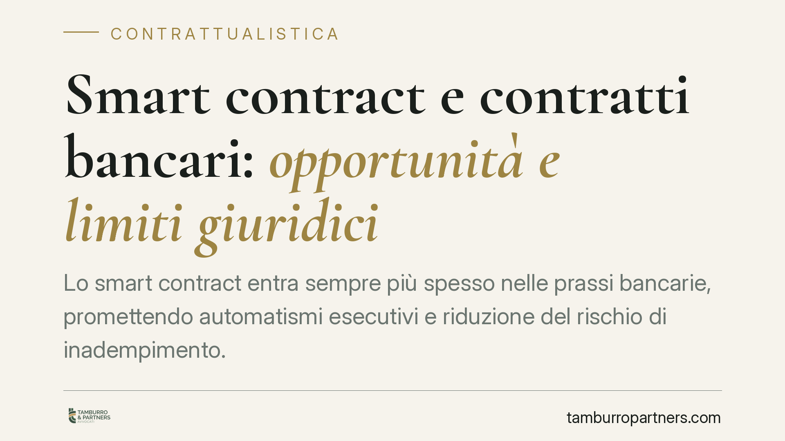

Smart contract e contratti bancari: opportunità e limiti giuridici
Lo smart contract entra sempre più spesso nelle prassi bancarie, promettendo automatismi esecutivi e riduzione del rischio di inadempimento. Ma un codice informatico che si auto-esegue non coincide con il contratto giuridico. Capire dove finisce l'automazione e dove inizia il diritto è oggi essenziale per banche, imprese e operatori che intendono adottare queste soluzioni senza esporsi a nuove aree di contenzioso.

Di cosa parliamo
Con l'espressione *smart contract* si indica un programma informatico che esegue automaticamente determinate operazioni al verificarsi di condizioni predefinite. Nel contesto bancario può tradursi, ad esempio, nell'addebito automatico di una rata, nello sblocco di una garanzia o nell'attivazione di una clausola risolutiva senza intervento umano.
È importante una precisazione terminologica: lo smart contract, di per sé, non è un contratto in senso giuridico. È uno strumento tecnico che può *eseguire* un contratto oppure tradurne in codice alcune clausole. Il contratto resta l'accordo tra le parti; il codice ne è, al più, la modalità di attuazione.
Inquadramento normativo
Nell'ordinamento italiano il riferimento è l'art. 8-ter del D.L. 135/2018, convertito con L. 12/2019, che definisce lo smart contract come un programma per elaboratore operante su tecnologie basate su registri distribuiti (blockchain) e i cui effetti vincolano le parti secondo gli schemi negoziali pattuiti. La norma riconosce inoltre la validità della memorizzazione tramite tali tecnologie ai fini della validazione temporale elettronica (art. 41 Regolamento eIDAS, UE 910/2014).
Questo significa che lo smart contract si innesta sulle categorie tradizionali del Codice civile: la formazione del consenso (artt. 1321 e 1326 c.c.), i requisiti di validità (art. 1325 c.c.) e i limiti dell'autonomia negoziale (art. 1322 c.c.). Nessuna automazione può superare le norme imperative, l'ordine pubblico e il buon costume. In materia bancaria restano fermi, in particolare, gli obblighi di trasparenza del Testo Unico Bancario (D.lgs. 385/1993) e la tutela del consumatore contro le clausole vessatorie (artt. 33 e ss. Codice del Consumo).
Implicazioni pratiche
Per un istituto di credito o un'impresa che valuti l'uso di smart contract, il punto critico è la traduzione: portare in codice una clausola contrattuale comporta scelte interpretative che, se imprecise, generano un divario tra ciò che le parti hanno voluto e ciò che il programma esegue.
Un esempio concreto: una clausola risolutiva espressa richiede, secondo l'art. 1456 c.c., una manifestazione di volontà della parte adempiente. Un codice che risolve automaticamente il rapporto al primo ritardo rischia di operare in modo più rigido di quanto la legge consenta, ignorando la buona fede nell'esecuzione (art. 1375 c.c.) e la valutazione di non scarsa importanza dell'inadempimento (art. 1455 c.c.).
Si apre così un paradosso: lo strumento nato per ridurre il contenzioso può crearne di nuovo, spostandolo sul piano della corretta traduzione del testo negoziale in linguaggio informatico e sulla gestione degli errori di programmazione (*bug*), delle condizioni non previste e dell'impossibilità di modificare unilateralmente un codice già in esecuzione.
Resta inoltre aperta la questione della tutela del contraente debole. L'automatismo non deve tradursi in un aggiramento delle garanzie previste per consumatori e clienti, né in una compressione del diritto di far valere vizi, sopravvenienze o cause di invalidità.
Cosa fare in concreto
- Mantenete un testo contrattuale prevalente. Prevedete espressamente che, in caso di divergenza tra codice e clausole scritte, prevalga il testo negoziale sottoscritto dalle parti.
- Verificate la traduzione in codice. Fate validare la corrispondenza tra clausole giuridiche e istruzioni informatiche da un soggetto competente sia sul piano tecnico sia su quello legale, prima della messa in esecuzione.
- Predisponete meccanismi di sospensione e correzione. Inserite procedure che consentano di bloccare l'esecuzione automatica in caso di contestazione, errore o sopravvenienza, evitando effetti irreversibili.
- Presidiate la trasparenza. Assicuratevi che il cliente riceva un'informativa comprensibile sul funzionamento dell'automatismo e sulle sue conseguenze, in linea con gli obblighi del TUB e del Codice del Consumo.
- Individuate il foro e la legge applicabile. Non date per scontato che la tecnologia risolva i conflitti: disciplinate espressamente competenza e legge regolatrice del rapporto.
L'adozione di smart contract nei rapporti bancari è un'evoluzione di prospettiva, non una scorciatoia. Il diritto non arretra davanti all'automazione: la accompagna, ponendo confini che vanno conosciuti prima e non dopo il contenzioso.
---
*Contributo informativo a cura di Tamburro & Partners - Avv. Giuseppe Tamburro. Non costituisce parere legale.*
Ogni contratto ha il suo equilibrio.
Se vuoi una revisione delle clausole o una redazione su misura, scrivi allo studio. Ti rispondiamo entro un giorno lavorativo.